{kind=link}
{kind=link}
{kind=link}
{kind=link}
{kind=link}
{kind=link}
{kind=link}
{kind=link}
 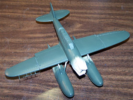
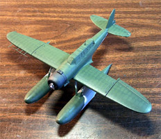
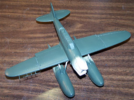
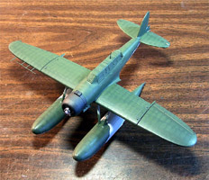
{kind=link}
{kind=link}
You can click on the images above to view larger pictures.
Nichimo 1/48 E13A1-B Jake
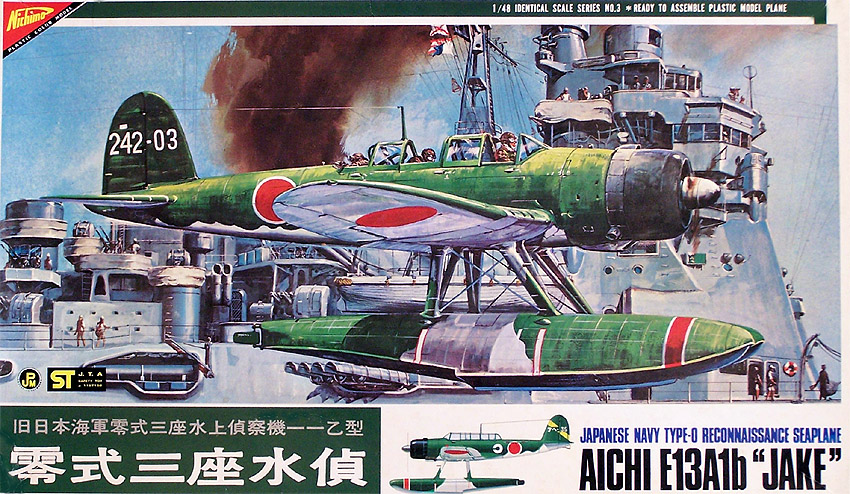
Kit #4803 MSRP $35.95
Images and text Copyright � 2005 by Matt Swan
Developmental Background
Aichi developed the original concept for the E13A1 Jake in 1937 and the first prototype was completed by 1938. This long range seaplane filled the position of the standard scout plane operating from heavy cruisers, battleships and seaplane tenders. With the ability to stay aloft for as long as 15 hours it remained anonymous but had been everywhere around the Pacific during the war and was popular with its crews. This aircraft played several important roles in pivotal historic encounters. It was used to scout Pearl Harbor prior to the Japanese attack. The type figured in a number of mishaps that played a crucial part in determining the outcome of the Battle of Midway. Problems with the catapult aboard the Cruiser Tone delayed the launching of their E13A, Chikuma�s E13A was forced to return early because of engine trouble. Both of these incidents reduced the search area and delayed the spotting of the American fleet, depriving the Japanese of the initiative. When the pilot from Tone, who was finally able to become airborne after a long delay, spotted the US fleet, he failed to report the presence of carriers.
Manufactured in larger numbers than any other Japanese floatplane, the Aichi E13A was the Japanese equivalent of the German Arado AR-196 or the US Vought OS2U Kingfisher. One of the moments of glory in the history of the E13A, and that of the IJN, came when Jakes scouting for the Japanese 8th fleet located the United States Navy fleet in the sound off Guadelcanal on August 9, 1942. In this battle the United States Navy suffered the worst defeat in a surface action in its entire history. Besides being carried by all IJN cruisers, the E13A operated from the battleship Haruna and the seaplane tenders Chitose, Chiyoda, and Kimikawa Maru as well as shore bases.
The E13A1-B was the last variant of the Jake and bears an AVS radar system which had antennae protruding from the sides of the fuselage and from the front of the wings. It could be fitted with a 20mm gun and with exhaust flame-dampers. It could also use a magnetic detection system against submarines, but then had to operate at less than 12 meters above the surface. It entered service with the IJN in 1941 and was produced by three different aircraft manufactures for the entire duration of the war. 1418 Jakes had been produced during this period, the majority by Watanabe Tekkosho (1237) rather than by Aichi Kokuki (133). Some aircraft were used in the final days for kamikaze attacks
The Kit
The Jake has been largely ignored by model manufactures since the earliest days of the hobby. Its presence in scale modeling seems to be as anonymous as its presence in the Pacific Theater. In 1/48 scale the only kit available is the Nichimo package and it is somewhat unusual and pricey. This kit was released back in the late 1970s and featured the then industry standard of raised panel lines and rivets. Fortunate for us this is actually fairly accurate. The aircraft being designed and built in the mid to late 1930s actually did have a lot of raised surface details. What�s most unusual about this kit is that it inhabits a fuzzy area halfway between action toy and serious scale model.
The kit was designed to contain a single battery and small electric motor to turn the prop. As a result of this design the crew figures have been compacted to fit above this hardware and the cockpit detail suffered greatly. It looks okay from a casual glance but on close inspection there is no dash, no radio equipment, no seats, just three scrunched up crew, a map table, a half of an interior bulkhead and a rear machine gun. I imagine the floor could be cut out and a new interior could be built from scratch but the crew would have to be replaced. Aslo9 due to this motorized design (by the way � the kit does not include a motor) the engine face is somewhat lacking in depth. Continuing on with the action toy aspect, all the control surfaces including the flaps are hinged and positionable. The wings are designed with a nifty sliding/folding hinge that appears quite sturdy and gives a reasonably good fit. Below left is a view of the wing interior with the hinge installed and showing the aileron and flap pieces.
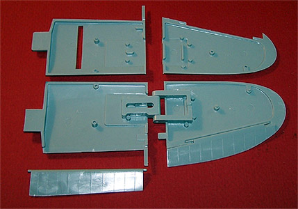 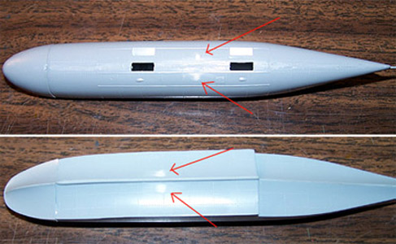
On the serious scale model side we have a very good exterior profile, good crisp panel line definition and rivet detail. While the crew figures are somewhat compacted they show good detail. The general parts fit is fair to good. The movable control surfaces have fairly sturdy hinges and have a fairly accurate range of travel. The main float sections and fuselage halves fit together very nicely but the nose sections of the floats produce a lip and gap that will require shaving and filling. The cockpit section of the fuselage will require careful gluing and stressing to avoid an unsightly step. There is some issue with sinkholes especially on the larger pieces. Above right you can see four areas that appear on each float needing putty to fill sink holes. There are at least three areas on the inner wing panels with similar problems. A nice accessory with this kit is a large beaching dolly.
The layout of the parts on the trees is somewhat odd compared to conventional kits. Instead of having a clear level of organizational grouping the parts are scattered here and there. This does make it just a little difficult to find the parts during construction. The parts on the trees show a medium level of flash and some heavy mold separation seams. The kit contains 84 parts done in a medium gray high pressure injection molded polystyrene along with a single small sprue of clear parts. There are only two pieces here, the main canopy and a positionable rear gunner�s hatch. The fit of the canopy to the fuselage is only marginal and some careful use of clear parts cement will be needed here. All together we have 86 pieces in the box.
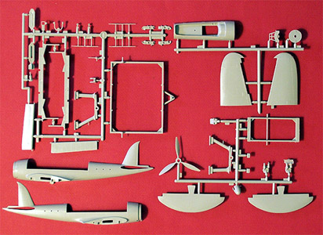
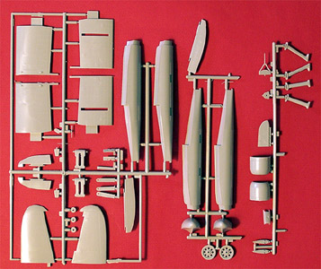
You may click on the images above to view larger pictures.
Decals and Instructions
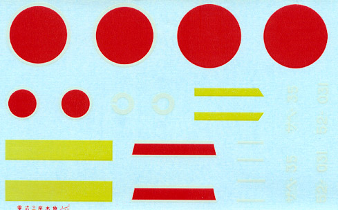
If you are going to build this kit you had best brush up on your Japanese because that is the only language you�ll see on the instruction sheet. The instructions are in the form of a large sheet, twice folded, printed on both sides. Fortunately the pictorial instructions are pretty clear and you can build this without reading Japanese. There is a lot of Japanese text scattered throughout the exploded views and they may have something to do with order of assembly or painting but I do not read Japanese so I must resort to outside reference material for proper coloring. There are three exploded views dealing with the installation of an electric motor that is not included in the kit. There is one black and white set of pictures showing general decal placement.
Decals are sparse with this kit covering just the basic markings. Unit markings are included for two aircraft but there are no service stencils or warning markings. The decals appear to have reasonable color density on the sheet but previous experience with Nichimo decals tells me that if you have any color changes under a decal like from a camouflage pattern you had best prepaint the area to a uniform color or it will show through. While the white outer ring on the hinomarus has kind of disappeared in the scanning process it is there and shows a good print registry. As you can see yellow leading edge wing markings are provided as decals but I recommend painting these on the model to avoid splitting and cracking decals down the road. I have used Micro-Set and Micro-Sol setting solutions as well as Gunze Mr. Marker Soft on Nichimo decals and have not had any adverse effects with them.
Conclusions
Yes, this aircraft has been sorely ignored by main stream model manufactures. This offering from Nichimo is the only version available in 1/48 scale and even in 1/72 there are only two and both of those are from Hasegawa. There are a few aftermarket items out there such as two different engines from Engines and Things along with a mask set from Cutting Edge. The one thing the kit needs most desperately, a replacement cockpit, is not out there � bummer.
This was a key aircraft for the IJN and played a crucial role in several important conflicts during the war. The model is buildable but does require a little more work than we may be accustomed to on contemporary model kits but if you want to model important aircraft from the Pacific Theater of operations you really should have one of these.
4/16/05
Construction
I�ve been tinkering with this project for about a month now and thought I would share the progress with you. I spent a good week just thinking about what I wanted to achieve with this kit and just how far I wanted to go. The interior gave me the greatest pause because basically, it sucks.
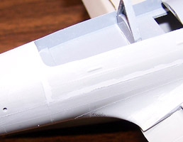
The pilots look to be closer to 1/72 scale rather than 1/48. If I want to detail the interior it will all have to be scratch built and new crewmembers found. In the end, I decided that the model would be hanging from the ceiling when complete so detailing the interior would be a waste of time. I elected instead to spend my time working over the exterior of the model.
Once the basic planning stage was over I started cleaning up parts and gluing stuff together. I found several dimples and sink marks in the model that had to be filled before assembly. The engine face was painted and detailed before installation in the cowling but all the rest of the model (with the exception of the fuselage side antenna) was assembled before any other painting was done. The cockpit piece, which is also the top section of the fuselage, had a terrible fit that left a very pronounced step along the side. This was shaved, sanded then filled with Mr. Surfacer 500. I also had some trouble with the wing to fuselage seam. Again, there was a pronounced step that required shaving and filling. I used this model as a test bed for Mr. Surfacer and filled the spine seam from the engine cowling to the tail plane with Mr. Surfacer 500 and treated the wing root with Mr. Surfacer 1000. The images below show some of the work done at this stage; each of the smaller images is linked to a larger picture if you want to click on it.
I also used Mr. Surfacer as my primer this time rather than the usual Model Master Primer Gray cut with lacquer thinner. I was quite pleased with the results and may have to change over to this product as a standard primer. Once the primer had dried overnight I painted engine cowling with my own mix of flat Black with a few drops of Silver then masked that area off. The crew figures were painted and installed; the canopy was masked and glued in place with Testors Clear Parts Cement. There was a huge gap along the sides of this piece and the fuselage that was filled with successive layers of clear parts cement. The exterior of the canopy was prepainted with the same medium gray that was used inside the cockpit to give the framing interior color. The underside of the model and the center sections of the floats were painted with Model Master Light Gray enamel. The demarcation areas were masked off with 3M masking tape cut to the desired pattern and then Gunze-Sangyo IJA Green was used as a base color coat.
Now I will start the weathering process. In the first stage I take some of the base IJA Green and lighten it 25% with white then thin it about 50% with isopropyl alcohol. I reduce the pressure on my airbrush to about 3psi and carefully fill the center of each panel working at about a 2-inch range. The fuselage masks were removed at this point.
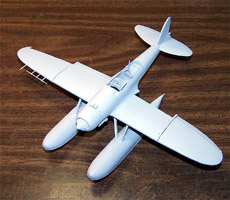
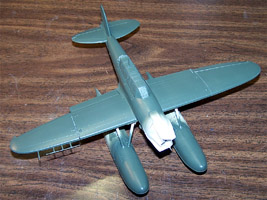
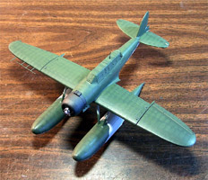
You can click on the images above to view larger pictures.
4/27/05
The next thing is to seal the model with Future floor polish and let it cure for a day or two. Now the decals can be applied. The kit provides the yellow wing panels as decals and they suck. They do not want to lie down and react badly to setting solutions. I should have painted these on rather than try to use the decals. Over a three-day period I work the decals with Mr. Marker Soft trying to get them to lie down and finally have something I can live with. All the other decals behaved fairly well with only a little bubbling. Below left shows the model at this stage, you can click on that for a larger image.
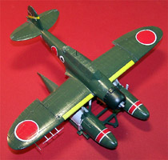
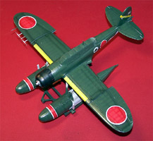
Once again the model has to dry for a day or so and the decals can be sealed with Future. The red in the Hinomarus is very close to Testors flat red so starting with this paint I added a few2 drops of white to lighten it and airbrushed the central panel area over the decals. Next I thinned down some Tamiya X-19 Smoke and added a few drops of Liquitex Flow aid. Taking my air pressure back down to about 3 psi I shaded the main spar areas across the wings, over the decals, along the fuselage and on the tail surfaces. The image at the right shows the model at this stage of the game. I thought the post shaded panel lines were a little overdone so came back with some of the original, unlightened green and toned down the shading just a little. Once again the model has to dry for a day before I can continue.
It�s been a fairly long paint process but the end is near. The next stage is a conventional sludge wash brushed across the raised rivet lines. This is allowed to dry for about five minutes then is wiped gently from front to back on horizontal surfaces and top to bottom on vertical surfaces. Final details were added such as the side mounted radar arrays, the mast aerial and the propeller. I want to point out that the propeller was done with Alclad aluminum and the yellow warning strips were masked and painted. The model needed only a short time for the residual moisture to flash off from the panel line wash and I was then able to coat it with Polly Scale clear flat. The canopy masks were removed and a small amount of ground pastel chalks were rubbed in around the fuel fill caps and underneath the aircraft as exhaust staining. The model is very tail heavy; I should have added weight to the front of the floats early on in the build. Instead, to make her sit on the beaching dolly I have to place a small piece of Blue Tac in each float bracket. Even with this it takes very little to make her sit back on the float rudders.
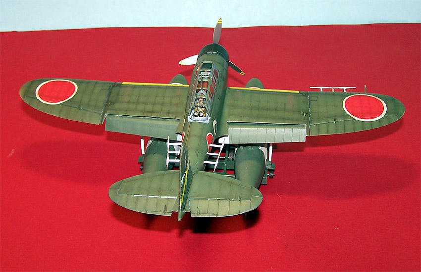
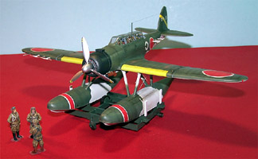
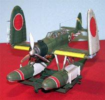
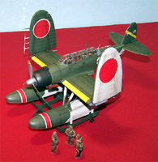
You may click on these small images to view larger pictures.
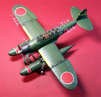
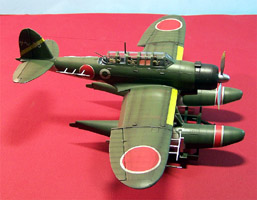
This was a fun build. The kit has a crappy interior and there are some fit issues with the larger parts. Jake was by Aichi, and I'm willing to bet that much of the Val interior would be a pretty close fit if you wanted to overhaul the interior. Kits like this one can be a lot of fun and are great for testing new procedures, you tend to be more adventurous with something that didn�t cost an arm and a leg to start with and the results (when stuff works right) can make you just sit back and go �Wow�.


{kind=link}
{kind=link}
{kind=link}
{kind=link}
{kind=link}
{kind=link}
{kind=link}